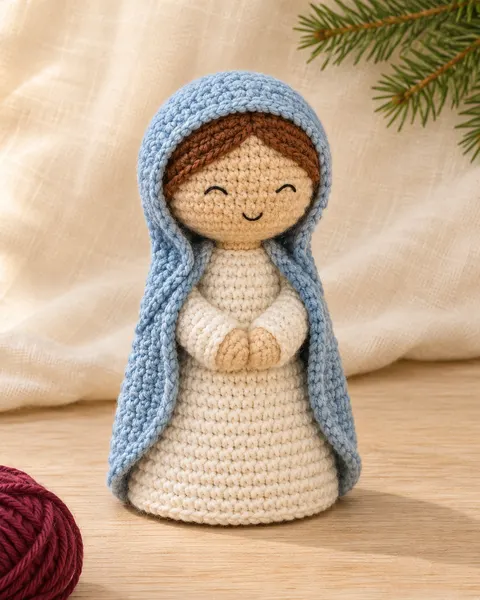
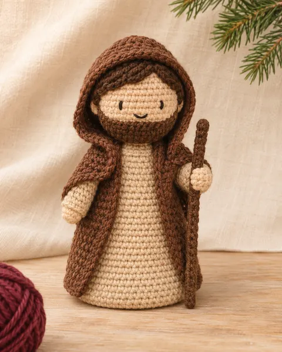
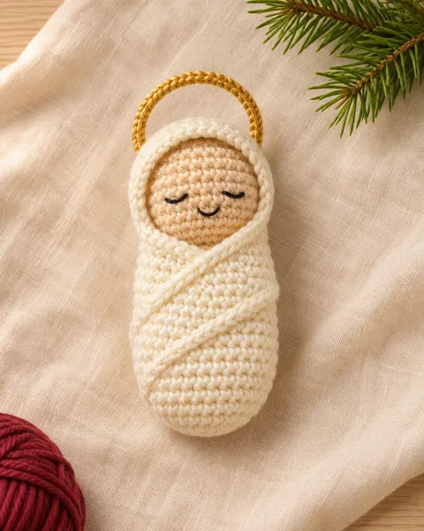
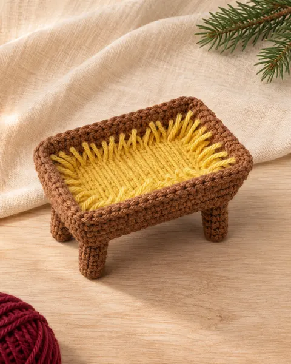
3 peças
Sagrada Família
Menino Jesus com manjedoura, Maria e José.
Guia digital de amigurumi · Natal 2026
12 peças em amigurumi, da Sagrada Família aos Reis Magos, com receita carreira por carreira e fotos das etapas.
Guia em PDF · a partir de R$ 14,90
Peça por peça, o presépio fica pronto e volta pra sala todo Natal.




Menino Jesus com manjedoura, Maria e José.
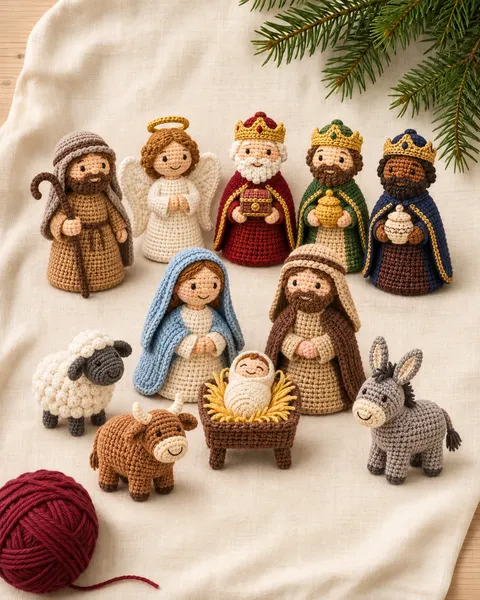
A Sagrada Família, os 3 Reis Magos, o Anjo, o Pastor, os animais e a Estrela de Belém.
Imagens ilustrativas.
Você escolhe por onde começar e completa o presépio no seu tempo.
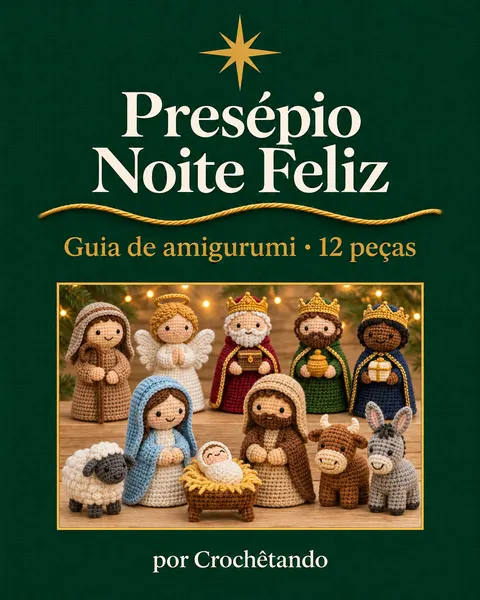
Mais do que um enfeite: um presépio feito por você, pra ficar na família.
Uma peça hoje, outra amanhã. O guia fica no seu celular pra abrir quando quiser, e dá pra imprimir.
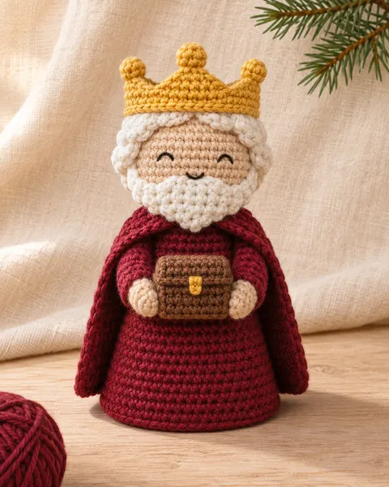
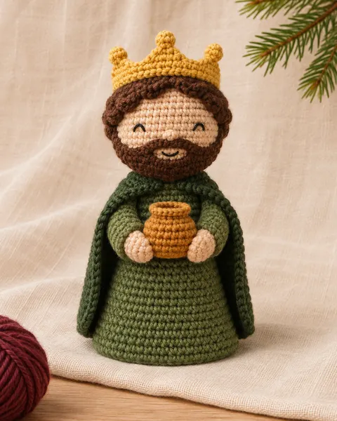
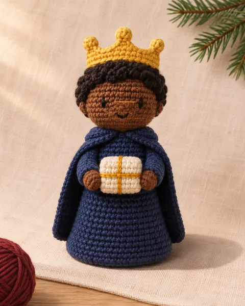
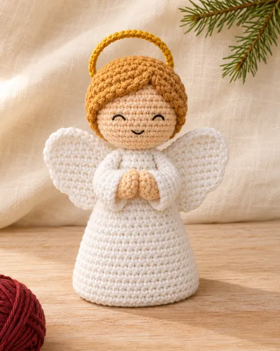
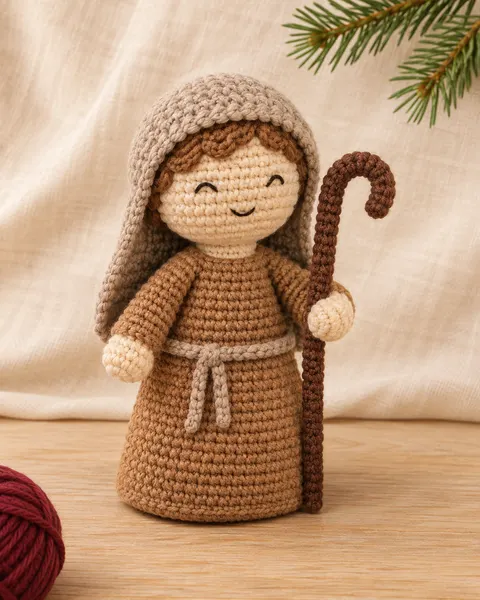
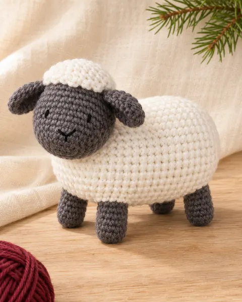
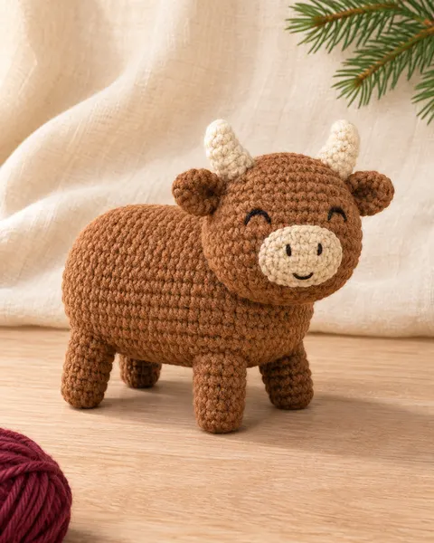
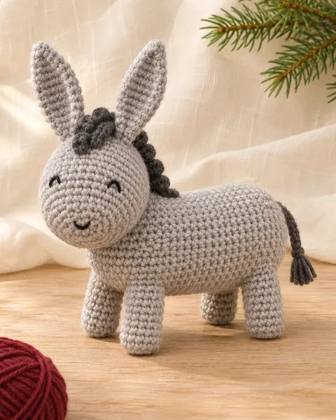
Imagens ilustrativas.


A Crochêtando é uma página feita para quem ama crochê.
Todas as peças que você vai aprender a fazer, uma receita para cada.
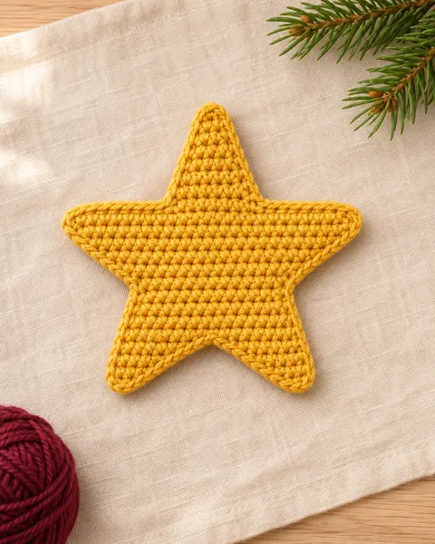
Imagens ilustrativas.
COMPLETO
R$ 27,90pagamento único
QUERO O COMPLETOR$ 14,90pagamento único
QUERO O BÁSICONo app do banco, o recebedor aparece como Cakto.
Separe os fios, abra o guia no celular e comece pelo Menino Jesus. O resto vem peça por peça.
O guia explica os pontos básicos com foto. Comece pelo Menino Jesus, a peça mais simples. As outras pedem um pouco mais de prática, principalmente na montagem.
Fio 100% algodão para amigurumi, de cerca de 2 mm, e agulha de 2 mm. A lista de compras do guia mostra cada cor e a metragem estimada.
Depois do pagamento, o link do guia chega no seu e-mail. Você baixa o PDF e abre no celular, no computador ou imprime.
Não. É um produto digital: você recebe o guia em PDF. Fios e materiais não estão inclusos.
[DEFINIR: sim, as peças prontas podem ser vendidas; o PDF não pode ser revendido nem compartilhado.]
Você tem 7 dias de garantia. É só pedir o reembolso pelo e-mail de suporte.